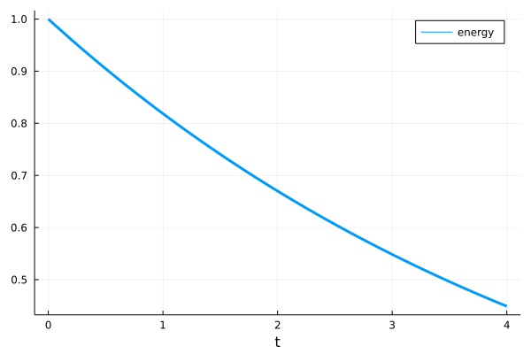

Diagnostics
We can add diagnostics to a FourierFlows's problem using Diagnostic functionality.
To demonstrate how we add diagnostics to a PDE problem, let's try to add one to the simple PDE problem we constructed in the Problem section. For example, say we'd like to add a diagnostic we refer to as the "energy" and which we define to be:
\[E = \int u^2 \, \mathrm{d} x .\]
After we have constructed the problem (prob) (see Problem section), we then create a function that takes prob as its argument returns the diagnostic:
using LinearAlgebra: ldiv!
function energy(prob)
ldiv!(prob.vars.u, grid.rfftplan, prob.sol)
return sum(prob.vars.u.^2) * prob.grid.dx
endand then we create a Diagnostic using the Diagnostic constructor. Say we want to save energy every 2 time-steps, then:
E = Diagnostic(energy, prob, freq=2, nsteps=200)Diagnostic
├─── calc: energy
├─── prob: FourierFlows.Problem{DataType, Vector{ComplexF64}, Float64, Vector{Float64}}
├─── data: 101-element Vector{Float64}
├────── t: 101-element Vector{Float64}
├── steps: 101-element Vector{Int64}
├─── freq: 2
└────── i: 1Now, when we step forward the problem we provide the diagnostic as the second positional argument in stepforward!:
stepforward!(prob, E, 200)Doing so, the diagnostic is computed and saved at the appropriate frequency (prescribed by E.freq).
If we want to include multiple diagnostics we can gather all of them in an array, e.g.,
diag1 = Diagnostic(foo, prob)
diag2 = Diagnostic(bar, prob)
stepforward!(prob, [diag1, diag2], 1)The times that the diagnostic was saved are gathered in E.t. Thus, we can easily plot the energy time-series, e.g.,
using Plots
plot(E.t, E.data,
label = "energy",
xlabel = "t")